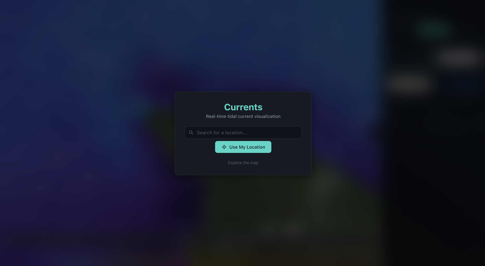
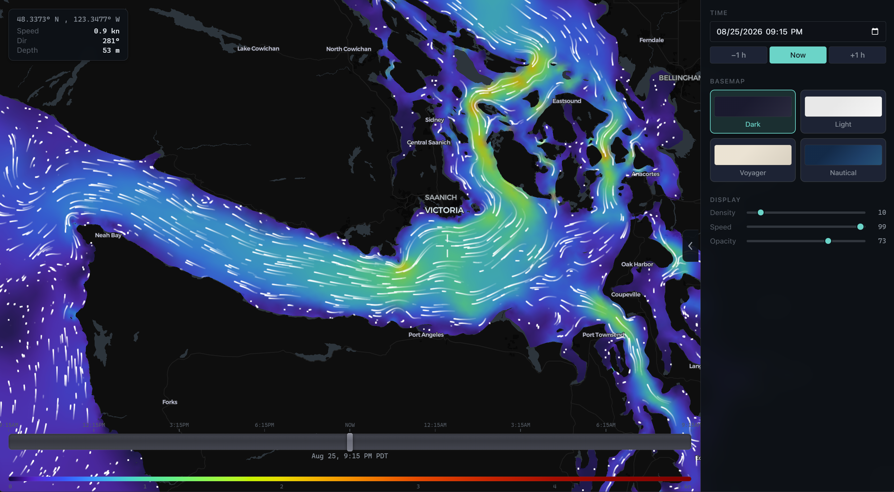
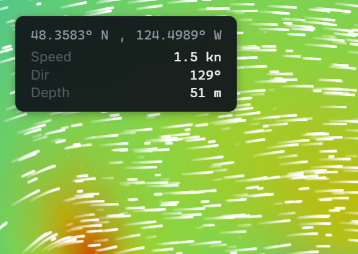

254,000 mesh nodes of tidal data, and no way to see any of it move. So I built a map that shows the ocean actually flowing.

The ADCIRC tidal database has harmonic constituents for the entire US Atlantic coast, Gulf of Mexico, and Caribbean: amplitude and phase for tidal elevation and current velocity at roughly 254,000 mesh nodes. It's public. Almost nobody outside of coastal engineering has ever seen it, because it ships as raw Fortran-era binary files, not something you can look at.
I built the pipeline to parse it, a FastAPI server to serve it, and a map that renders it as color and motion actually tracking the tide, at any point on the coast, at any time, past or future. No account, no login, just a map that shows you what the water near you is doing right now.
Three pieces of that below.
The data existed. Nobody had made it legible.
The raw ADCIRC files are a mesh definition and two binary constituent tables: harmonic amplitude and phase for tidal elevation and depth-averaged velocity, for eight constituents (M2, S2, N2, K1, O1, P1, M4, M6), at every one of those 254,000 nodes. There's no viewer for it. You either write a parser or the data stays theoretical.
I wrote the parser, then went further than just displaying it: rather than pre-rendering current speed for fixed timestamps, the server can hand the browser the raw harmonic constituents themselves. The client reconstructs velocity at any timestamp on its own, using the same astronomical tide-prediction math (Schureman, Meeus) that coastal engineers use, no external tidal library required. That's the difference between a map with a few saved snapshots and a map that can show you any hour you ask for.
A dataset nobody can look at might as well not exist.
A color field for magnitude, motion on top of it for direction.
A WebGL heatmap sits underneath everything, a triangulated mesh colored by current speed, so you can read magnitude at a glance before anything even starts moving. On top of that, a switchable overlay, particles, arrows, or streamlines, shows where the water is actually headed. Streamlines end up being the one I reach for most: they read like something already drawn by the current itself, and the eye follows them the way it follows a river on a map.
A scrubber along the bottom moves the whole map through a 24-hour window, and both layers update together as the tide turns. Density, speed, and opacity sliders exist so the view doesn't turn into visual noise at high zoom, where a few hundred meters can pack in thousands of mesh nodes.

The hardest part was everything I left out.
Drop a pin on the mesh and the dataset can answer almost anything about that point: full harmonic decomposition, all eight constituents, elevation on top of velocity. My first pass showed most of it, and it read like a research console, not something a person standing on a dock would ever open twice.
So I cut it down to four numbers: coordinates, speed, direction, depth. Speed and direction are the whole reason the project exists, interpolated for that exact point at 10-minute resolution from the surrounding mesh nodes, using the same barycentric math the renderer uses to color the map itself. Depth stayed because a current reading means something different over a shallow shelf than it does over a channel, and without it the number is just a number.
Everything else got cut. Raw scientific data that used to require a coastal engineering background now fits in a box the size of a business card, and it answers the one question anyone standing on that dock actually came for.
